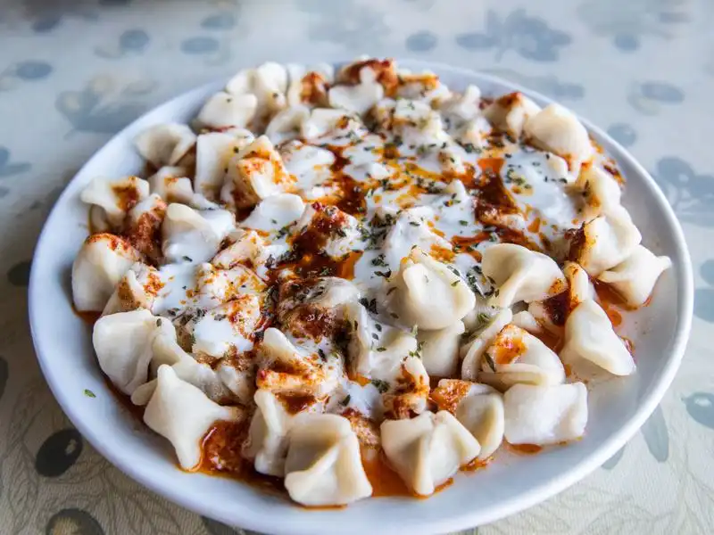

Manti

Description
Manti is a dish made by seasoning minced meat with various spices, putting it in small pieces of dough and boiling these pieces in water. Manti, which is a part of Turkish cuisine as well as Central Asian cuisine, is also a popular food in the former USSR countries. Manti is also consumed in Afghanistan, the Balkans, Northwest China and the city of Peshawar in Pakistan.
What is Manti ?
It is generally accepted that this dish was carried from Central Asia to Anatolia by the Turks and Mongols along the Silk Road. According to Holly Chase, Turkish and Mongol horsemen carried frozen or dried manti with them during their migrations. Turkish and Mongol troops could easily prepare manti over a campfire.
We can say that manti in Turkish cuisine is different when compared to Central Asian food culture. Making manti in Turkish cuisine requires more labor compared to Central Asian cuisine.
In Turkish cuisine, manti is usually served with tomato paste, melted butter and yogurt. Apart from this, the spice preference is mostly mint and sumac. It has changed over time according to the regions.

Ingredients
Dough
- 2 cups all-purpose flour, plus more for dusting
- ½ teaspoon salt
- 2 large eggs
- ½ teaspoon water, or as needed
Filling
- 2 onions, peeled
- ½ pound ground beef
- salt and pepper to taste
- ½ teaspoon water, or as needed
Red Pepper Oil
- 3 tablespoons vegetable oil
- 1 tablespoon red pepper flakes
Yogurt Sauce
- 1 (8 ounce) container plain yogurt
- 1 tablespoon minced garlic
Steps
- Make dough: Combine flour and salt in a large bowl. Add eggs and water, mixing well with your hands. Add more water, if needed, to form a soft dough. Cover and set aside for at least 30 minutes.
- Make filling: Shred onions and place them in a colander or sieve set over a bowl; drain and discard juice. Combine drained onion, ground beef, salt, and pepper in a medium bowl; mix well with a spoon until mashed. Set filling aside.
- Lightly flour a work surface and a large plate.
- Divide dough in half. Working with one piece at a time, roll dough on the floured surface into a rectangle as thin as possible. Cut into 2-inch squares using a knife or pastry wheel.
- Place about 2 teaspoons filling in the center of each square. Gather the edges of dough and pinch them together at the top to form a bundle. Transfer manti to the prepared plate; sprinkle more flour on top to prevent sticking.
- Make oil: Heat oil and red pepper flakes in a small skillet over low heat just until pepper flakes begin to color oil. Remove from heat and keep warm.
- Make sauce: Stir together yogurt and garlic in a small bowl; set aside.
- Make sauce: Stir together yogurt and garlic in a small bowl; set aside.
- Divide manti onto 4 plates. Spoon yogurt sauce over manti and drizzle with pepper oil.